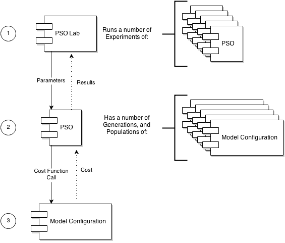

Particle Swarm Optimisation
The CPT uses a PSO to search through the model configuration search space.
A PSO creates a population of particle agents, these are seeded randomly in the search space. Each generation/iteration
a particle 'moves' through the search space. A particle moves through the model configuration search space looking for an optimal
model configuration based on a user defined cost function.
The PSO in the CPT has six parameters:
- Experiments
- Generation
- Population count
- Original velocity
- Personal best
- Global best

- A PSO Lab creates a number of PSO experiments, each experiment is a PSO run.
The model designer can define the number of experiments to run; HC and PSO are stochastic heuristics, running a number
of experiments increases the chance of a good outcome.
- A PSO (each experiment) seeds a number of particle agents, and moves the particles through the model configuration search space
until either the particles converge, or the number of moves exceeds the generation count.
- Each move the particles evaluate the model configuration using a cost function.
For more information about PSO in general see wiki for details.